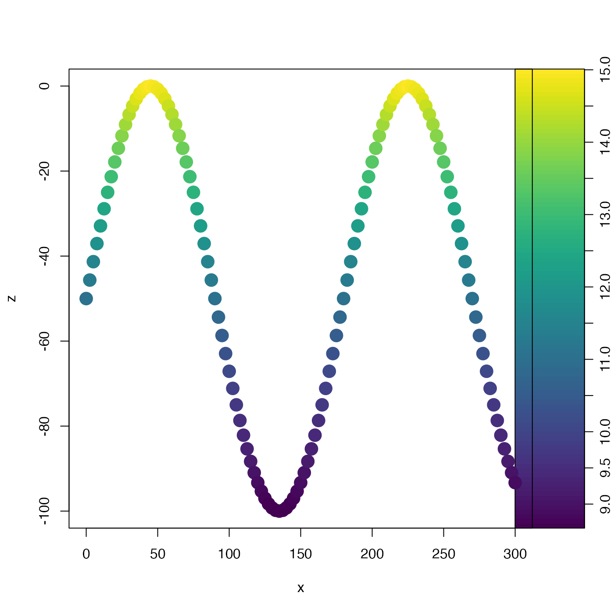

This is helpful in e.g. developing a color scale for an image plot. It is
not necessary that rlow be less than rhigh, and in fact
reversing them is a good way to get a reversed color scale for a plot.
rescale(x, xlow, xhigh, rlow = 0, rhigh = 1, clip = TRUE)a numeric vector.
x value to correspond to rlow. If not given, it
will be calculated as the minimum value of x
x value to correspond to rhigh. If not given, it
will be calculated as the maximum value of x
value of the result corresponding to x equal to
xlow.
value of the result corresponding to x equal to
xhigh.
logical, set to TRUE to clip the result to the range
spanned by rlow and rhigh.
A new vector, which has minimum lim[1] and maximum lim[2].
library(oce)
# Fake tow-yow data
t <- seq(0, 600, 5)
x <- 0.5 * t
z <- 50 * (-1 + sin(2 * pi * t / 360))
T <- 5 + 10 * exp(z / 100)
palette <- oce.colorsViridis(100)
zlim <- range(T)
drawPalette(zlim=zlim, col=palette)
plot(x, z, type='p', pch=20, cex=3,
col=palette[rescale(T, xlow=zlim[1], xhigh=zlim[2], rlow=1, rhigh=100)])
